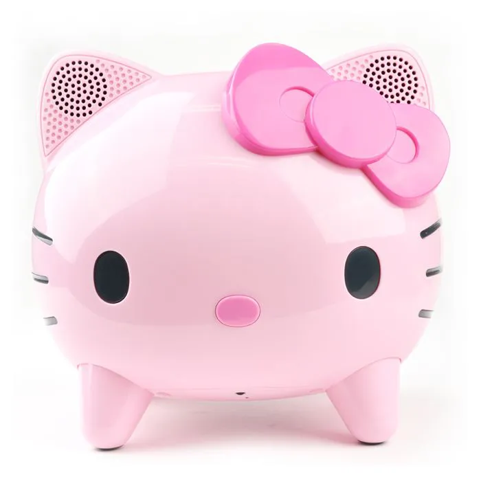
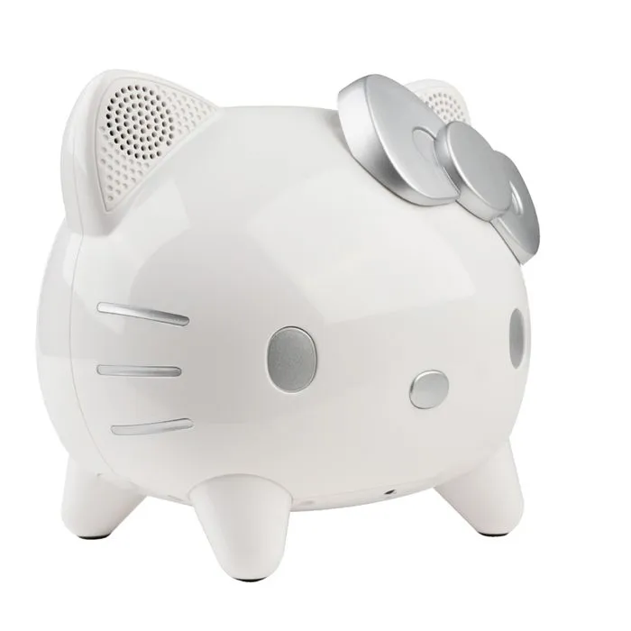

Notre Projet
La première assistance vocal dédiée autant pour les enfants que les adultes.

Notre Produit
Avec notre assistance vocal Hello Kitty, vous pouvez avoir un système audio connecté pour toute votre maison. Demandez à Hello Kitty de jouer une chanson et elle le fera, vous pouvez aussi lui demander la météo, la température ambiante d’une pièce, d’appeler quelqu’un depuis votre téléphone connecté grace à notre application simple et pratique d’utilisation !
